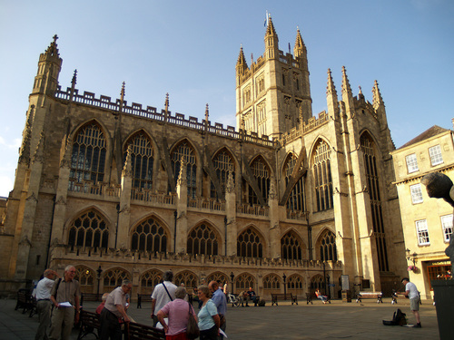

Bath Abbey, (or the Abbey Church of Saint Peter and Saint Paul) was originaly
built in the 7th century and then rebuilt in the 12th and 16th centuries. It
stands at 150m tall, and can seat up to 1200 people.

How many years since King Edgar was crowned in the Abbey?
Look at the plaque at the back of the abbey